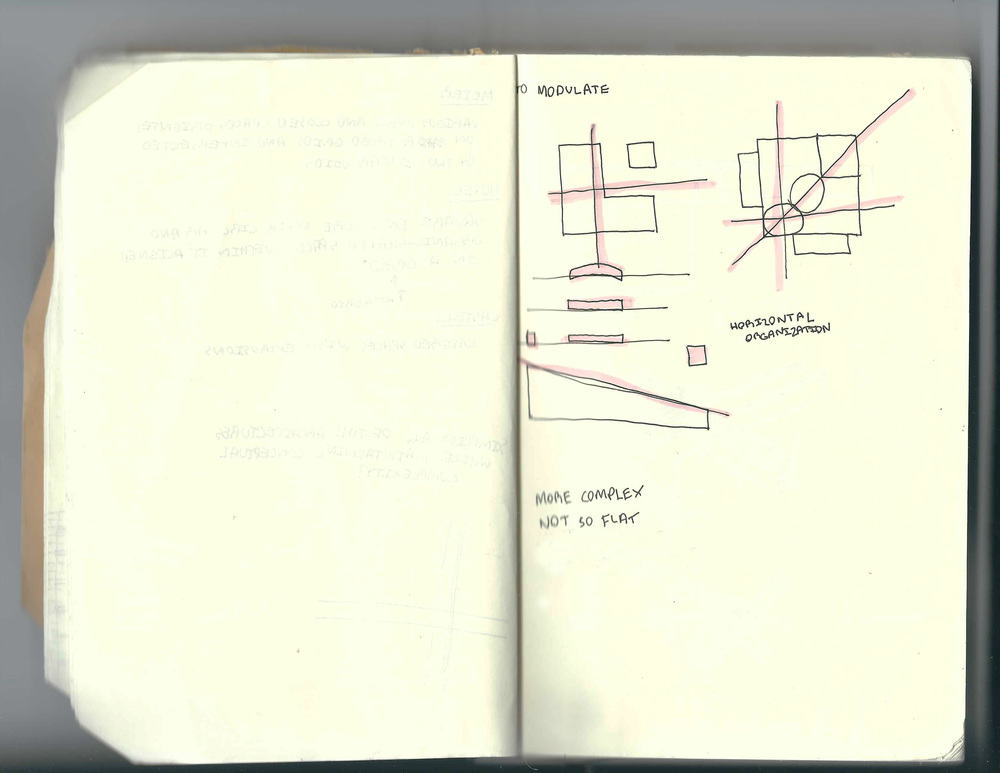

York Prize - Spring 2018
The York Prize competition was a week-long competition that involved the diagramming and synthesizing of two plans - one historic and one contemporary, and one section - from any time period. By collaging the two plans together, the most prevalent ideas of symmetry and organization with relation to a grid in plan view were taken, and by applying the section a sense of circulation was added that guides inhabitants towards the ramp and to the opening in the main wall that provides a view out into the environment.
Back

Next